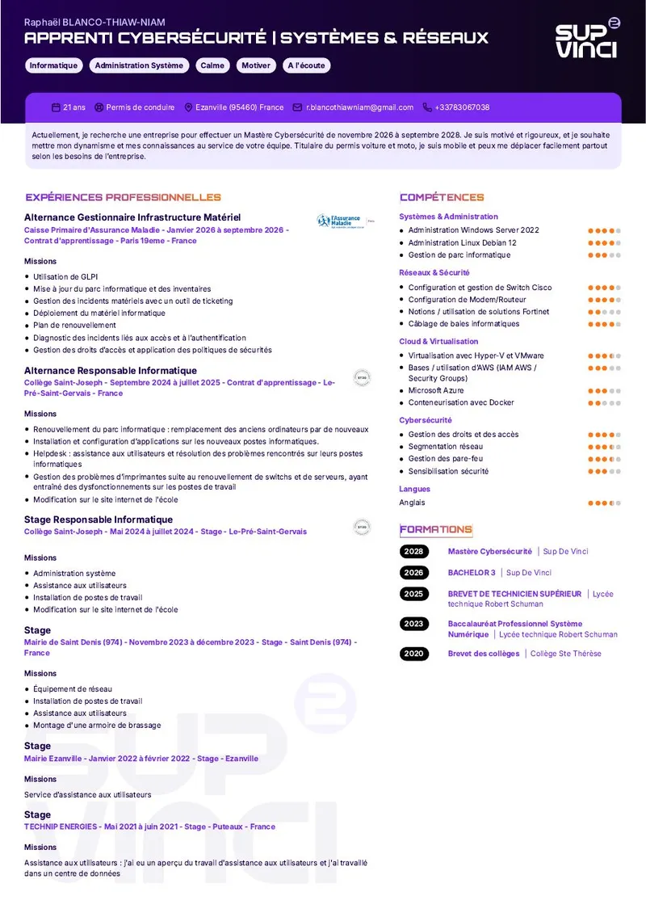
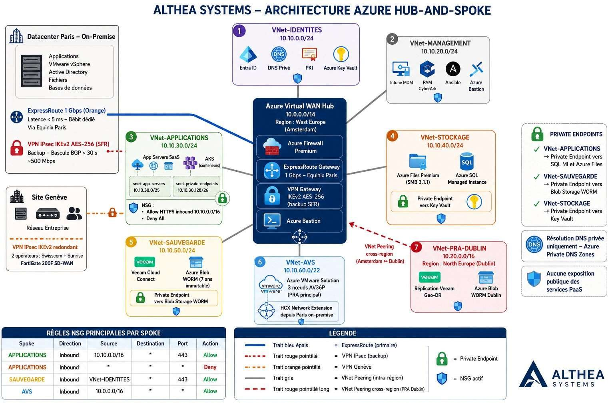
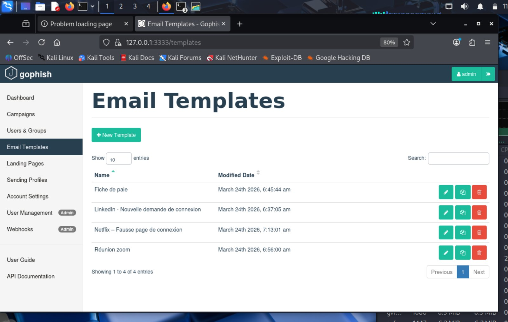
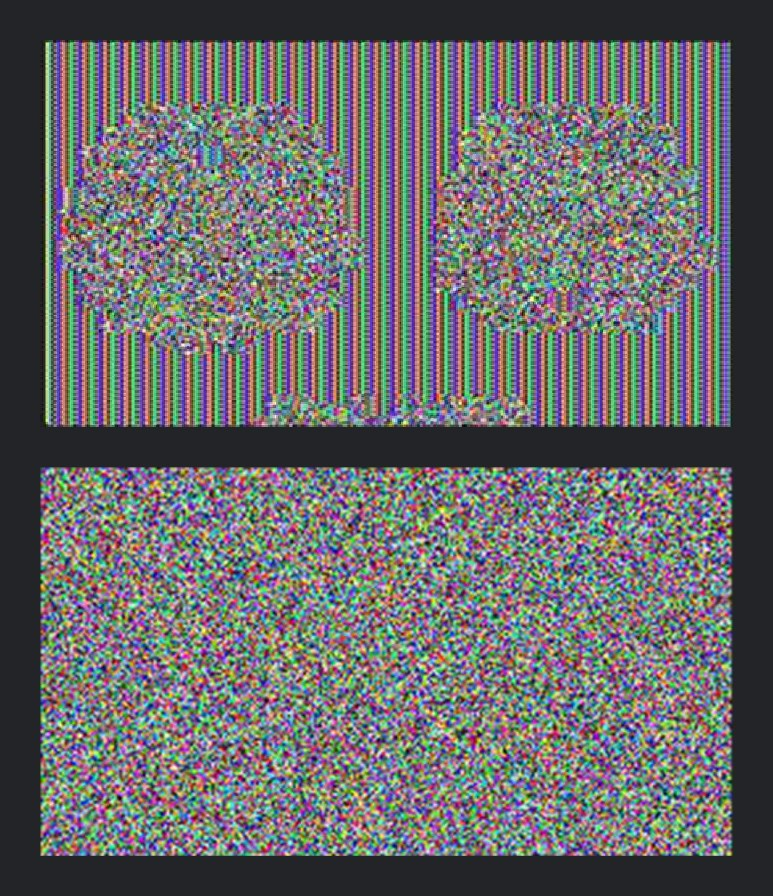
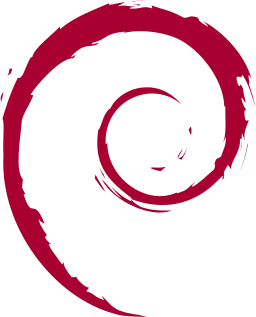
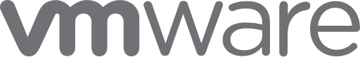
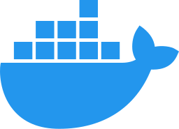
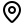

Migration vers Windows 11 à la CPAM de Paris
Environ 100 postes migrés avec Ivanti, GLPI et Nexthink, sans rupture de service et 100 % conformes.
Je suis Raphaël BLANCO--THIAW-NIAM, titulaire du BTS SIO option SISR, en Bachelor 3 Systèmes, Réseaux et Cloud à Sup de Vinci. Je cherche une alternance pour le Mastère Cybersécurité 2026-2028.
Orientation cybersécurité · CCNA 2 · Ézanville, Val-d’Oise
J’ai commencé par l’assistance aux utilisateurs, puis j’ai pris en charge des parcs, des serveurs et des switches. Je me spécialise maintenant en cybersécurité.

Objectif
Aujourd’hui, je souhaite approfondir mes connaissances en cybersécurité et sécuriser les infrastructures que j’administre, avec le Mastère Cybersécurité de Sup de Vinci, de 2026 à 2028.
Environ 100 postes migrés avec Ivanti, GLPI et Nexthink, sans rupture de service et 100 % conformes.
Projet de cours : un datacenter VMware à Paris et Azure en Europe, avec reprise en 45 minutes après sinistre.

Paris, Marseille et Lyon reliés sous Cisco Packet Tracer : VLAN, adressage IP, routage et segmentation.
Un environnement Windows Server : utilisateurs, groupes, droits d’accès et services d’annuaire.
Des travaux pratiques sur AWS, avec IAM et les Security Groups, et sur Microsoft Azure.
Travaux pratiques et études sur la sécurisation des infrastructures et l’analyse des menaces.
Bachelor 3 Systèmes, Réseaux et Cloud · 2025-2026

Mastère 1 Cybersécurité · 2026-2027

Janvier à septembre 2026 · Paris 19e
Gestionnaire infrastructure matériel, en alternance
Première CPAM de France, elle gère l’Assurance Maladie des Parisiens : affiliation, remboursement des soins, revenus de remplacement. Issue des ordonnances de 1945, elle naît en 1981 de l’éclatement de la caisse de la région parisienne en huit entités.
Septembre 2024 à juillet 2025 · Le Pré-Saint-Gervais
Responsable informatique, en alternance
Collège catholique privé sous contrat avec l’État, au Pré-Saint-Gervais, en Seine-Saint-Denis.
Mai à juillet 2024 · Le Pré-Saint-Gervais
Responsable informatique, en stage, avant l’alternance dans le même collège
Novembre à décembre 2023 · Saint-Denis, La Réunion
Stage informatique
Saint-Denis est le chef-lieu de La Réunion et la commune la plus peuplée des départements d’outre-mer.
Janvier à février 2022 · Ézanville
Stage informatique
Commune du Val-d’Oise, membre de la communauté d’agglomération Plaine Vallée, desservie par la gare d’Écouen - Ézanville.
Mai à juin 2021 · Puteaux
Stage informatique
Groupe d’ingénierie et de technologies de l’énergie : GNL, hydrogène, décarbonation. Héritier de Technip, fondé en 1958 par l’Institut français du pétrole, il est indépendant et coté à Paris depuis sa séparation de TechnipFMC en février 2021.

Debian
VMware
Docker2026 à 2028 · en alternance
Sup de Vinci, Paris La Défense
Titre de niveau 7 (bac+5), préparé en alternance de novembre 2026 à septembre 2028. Je cherche l’entreprise qui m’accueillera.
2026 · Paris La Défense
Sup de Vinci
Sup de Vinci est une école d’informatique créée en 1996, installée au CNIT de Paris La Défense, avec des campus à Rennes, Bordeaux et Nantes. Elle prépare du bac au bac+5 à des titres reconnus par l’État, en initial ou en alternance.
Obtenu en 2025 · Dugny
Lycée Robert Schuman
Lycée catholique privé sous contrat, fondé en 1920 par des ingénieurs chrétiens à Dugny, en Seine-Saint-Denis. Il forme aux métiers techniques, du bac pro au BTS.
2023 · Dugny
Lycée Robert Schuman
Ce bac pro est devenu le bac pro CIEL : cybersécurité, informatique et réseaux, électronique. En 2025, 89 % des candidats du lycée ont obtenu le bac et 69 % une mention, selon L’Étudiant.
2020
Collège Sainte-Thérèse
Le diplôme de fin de collège, obtenu en série générale dans l’académie de Versailles.
Certification
Cisco Networking Academy
Deuxième module du cursus CCNA de Cisco : commutation, VLAN, routage entre VLAN, redondance et réseaux sans fil.
Filtrer par thème
Je réponds aux messages des entreprises et des écoles. Le formulaire et l’email arrivent au même endroit.

LocalisationÉzanville, Val-d’Oise